![]()
Ⅰ. 前回の振り返り
1. 前回の「授業の感想」
- 別紙参照
2. 前回の補足：保存しよう
- ヒーリー，キーラン (2021), 3.7, 118-119ページ
- Rprojファイル、qmdファイルと同じ階層に「figures」フォルダを作る
- hereパッケージをダウンロード＋setupチャンクに追加
- ggsave()関数を使う
実行してみよう。ただし、quartoの利点は、wordやpdf、pptxへの書き出しがYAMLを修正するだけで、簡単におこなえることです。画像を切り貼りする必要性はあまりありません。操作方法は次回紹介します。
- here関数はRprojectファイルのパス名を教えてくれる
- 図やデータを書き出す際に重要
here()[1] "/Users/kariyach/Rstatistics/R-research/website"penguins %>%
ggplot(aes(x = bill_length_mm, y = bill_depth_mm, colour = island)) +
geom_point()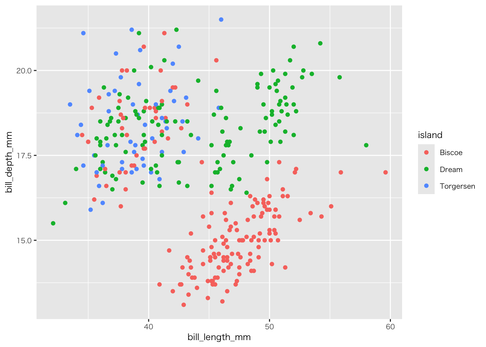
ggsave(here("teaching/RandQuarto/figures/figure_画像保存テスト234.jpg"), # パス名を指定（みなさんは「figure」だけでいいはず）
width = 16, # 横幅（inch）
height = 8, # 高さ（inch）
dpi = 600, # 解像度（72dpiがデフォルト）
device = "jpeg") # ファイル形式hereでパス名を指定。みなさんは「figures」だけでいいはずです（「teaching/RandQuarto/は要らない」）
3. 前回の補足：試行錯誤の大切さ
試行錯誤を始めるときに、2つの点を心に留めてください。1つ目は、何かを試すことには常に価値があるということです。たとえその結果何が起こるか完全にはわかっていなかったとしてもです。コンソールを怖がってはいけません。コードを使ってグラフを作るすばらしい点は、いったん壊したら元に戻せないような操作が含まれていないことです。もし何かがうまくいかなかったら、何が起きているかを特定し、それを修正し、そして作図コードをもう一度実行すればよいのです。
2つ目の点は、ggplotを使った作業の主な流れはいつも同じだということです。それは、テーブル型のデータから始め、位置・色・形といったグラフに表示される審美的要素に当たる変数をマップし、そしてグラフを描画するために1つか2つのgeom_関数を選ぶ、という流れです。コードの上ではこの流れは、まずデータとマッピングに関する基礎的な情報を持ったオブジェクトを作り、そこに必要な情報を重ねたり加えたりする というプロセスで実装されます。この作図法を一度身につけてしまえば、特に審美的要素のマッピングの指定とその継承方法が重要ですが、図を作るのが簡単になります（ヒーリー，キーラン (2021), 124ページ）。
Ⅱ. 正しい数値の示し方
旋回に引き続き、gapminderデータセットを使います。setupチャンクにlibrary(gapminder)を入力して下さい（前回はRチャンクで直接パッケージを読み込んだだけだと思うため）
1. グループ別データ
- ヒーリー，キーラン (2021), 4.2, 128-129
gapminder %>%
ggplot(aes(x = year, y = gdpPercap)) +
geom_line(aes(group = country)) # geom内に情報を足す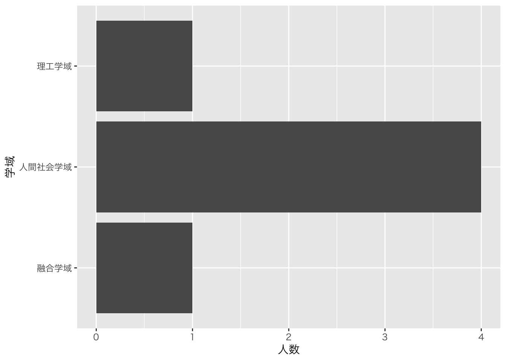
- 教科書は失敗例として挙げています（データを読み取れる図になっておらず、可視化に失敗しています）
2. 複数の図を並べる
gapminder %>%
ggplot(aes(x = year, y = gdpPercap)) +
geom_line(aes(group = country)) +
facet_wrap(~ continent, ncol = 4) # カテゴリー（factor型か文字型） / ncolで一行あたりのカラム数を指定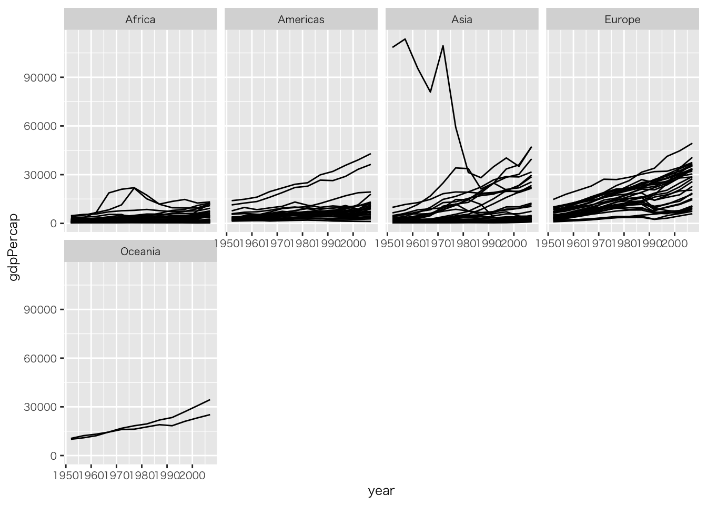
二つのカテゴリー（たとえば人種と性別）で図を分けたい場合はfacet_gridを使います。授業では説明を省略しますが、興味がある人は@HealyK:2021book1_translJA, 132-133ページを参考にしてください
3. geomによるデータの変換
教科書ではgss_smデータセットを使っていますが、日本時には直感的にわかりやすいデータではないため、今回は私が作った試験データを使います。教科書のデータセットの方がわかりやすい受講生は、教科書に従って作業して下さい
- Google Drive「データ」から以下のファイルをダウンロード
- sample_5科目.csv
- sample_5科目_平均点.csv
- 各自の「data」フォルダに収納
- read_csv()関数でデータを読み込み、オブジェクトに入れる(困ったら、先週のウェブページを参照しましょう)
df_sample5科目 <-
read_csv("data/sample_5科目.csv")df_sample5科目 %>% head()# A tibble: 6 × 7
年度 学期 クラス 科目 性別 生徒数 成績
<dbl> <dbl> <chr> <chr> <chr> <dbl> <dbl>
1 2020 1 A 国語 女 36 23.7
2 2021 1 A 国語 男 36 68.6
3 2022 1 A 国語 女 35 22.6
4 2023 1 A 国語 男 36 31.8
5 2020 2 A 国語 男 35 17.4
6 2021 2 A 国語 女 35 80.1比率が分かる図を作成しようとしています。説明は ヒーリー，キーラン (2021), 4.4, 135-137を参照下さい。私のサンプルコードの目標は男女比を図示することです
- 特定の列の表示の仕方
- データフレーム + $ + カラム名
- table()関数でカウントしてくれる
table(df_sample5科目$性別)
女 男
169 131 - まずは性別ごとの人数を棒グラフで描きます
df_sample5科目 %>%
ggplot(aes(x = 性別)) +
geom_bar() # デフォルトでカウント（stat(count)）される（geom_histogram(aes(y = stat(count)))）。カウントしたい場合はデフォルトのままでよい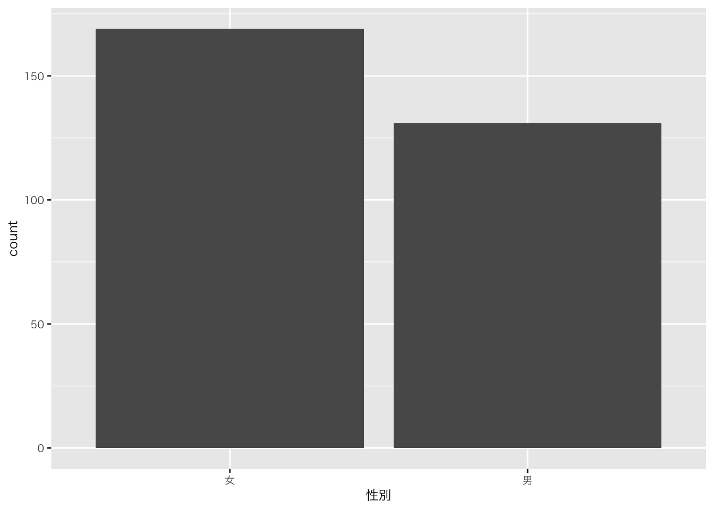
- 比率で表現します（y軸の変化に注目して下さい）
df_sample5科目 %>%
ggplot(aes(x = 性別)) +
geom_bar(aes(y = after_stat(prop))) # propは比率を計算させる関数ですdf_sample5科目 %>%
ggplot(aes(x = 性別)) +
geom_bar(aes(y = after_stat(prop), group = 1)) # 男女別ではなく、男女合算して一グループと見立てる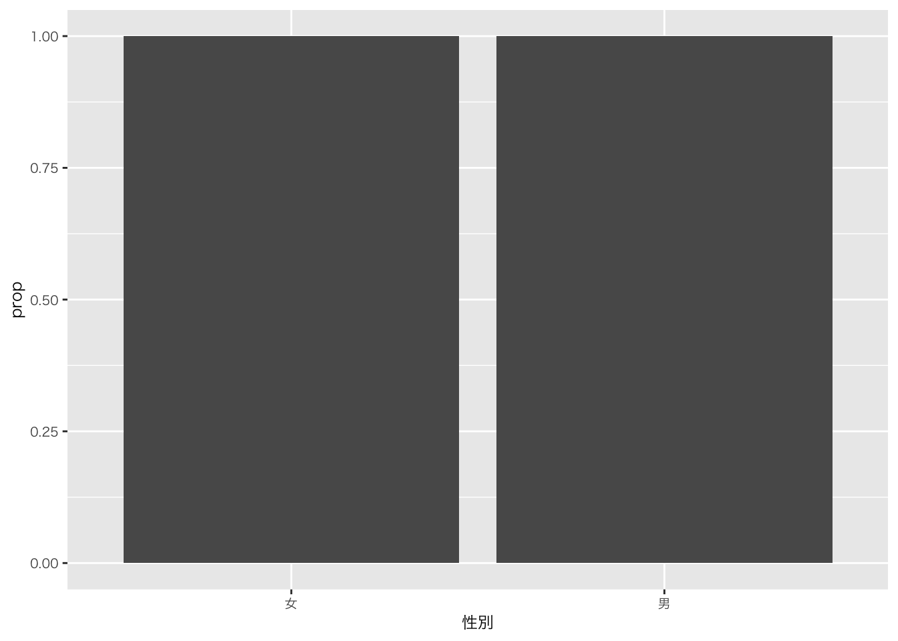
今回の場合は比率の分母を計算したいので、対象とする変数のカテゴリを使わずに、データの合計値を使って計算するようにggplot のコードを書き換える必要があります。そのため、ここではaes() 関数の呼び出しにgroup = 1と指定します。ここでの1は単なる「ダミーグループ」であり、prop を計算する際に、分母をデータセット全体にするためにこのコードを記述しています（ヒーリー，キーラン (2021), 137ページ）。
➡ 説明がわかりにくいかもしれませんが、一般的に円グラフで表現される図だと思って下さい。全体（一つの円）を想定するので、groupを1としている、ということです
色を付ける
df_sample5科目 %>%
ggplot(aes(x = 性別, color = 性別, fill = 性別)) +
geom_bar()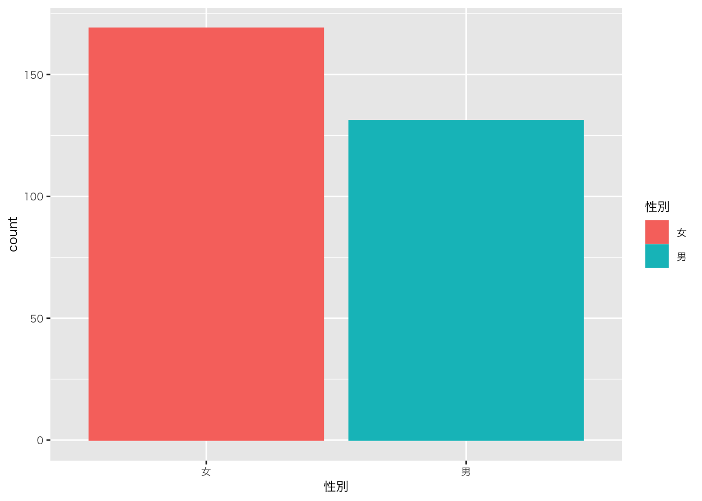
- ➡ 色が付いて見やすくなったが、情報の解像度が上がったわけではない
⑴ positionの指定
a) カテゴリー変数を積んで表示：fill
df_sample5科目 %>%
ggplot(aes(x = 年度, fill = 性別)) +
geom_bar(position = "fill")b) カテゴリー変数を横並びに表示：dodge
df_sample5科目 %>%
ggplot(aes(x = 年度, fill = 性別)) +
geom_bar(position = "dodge")
⑵ facetの追加
df_sample5科目 %>%
ggplot(aes(x = 年度, fill = 性別)) +
geom_bar(position = "dodge") +
facet_wrap(~ 性別)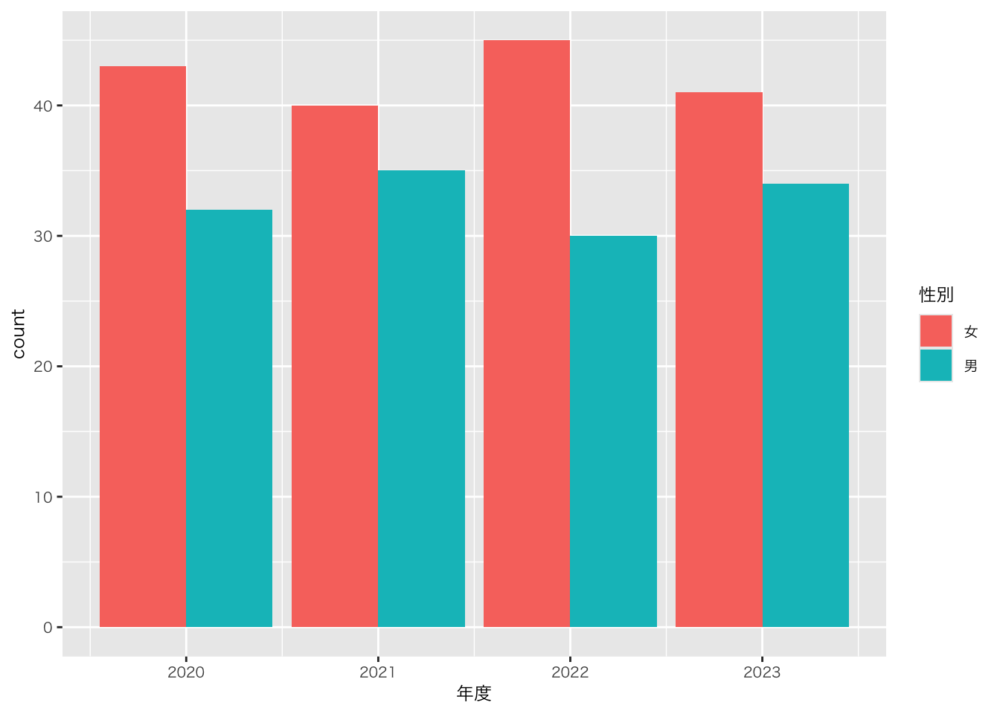
4. 個票データと集計データ：異なる指定
- 教科書では「不要な変換を避ける」として説明されている
df_sample5科目_平均点 <-
read_csv("data/sample_5科目_平均点.csv")サンプルデータを見比べてみる
a) 個票データ
df_sample5科目 %>% head()# A tibble: 6 × 7
年度 学期 クラス 科目 性別 生徒数 成績
<dbl> <dbl> <chr> <chr> <chr> <dbl> <dbl>
1 2020 1 A 国語 女 36 23.7
2 2021 1 A 国語 男 36 68.6
3 2022 1 A 国語 女 35 22.6
4 2023 1 A 国語 男 36 31.8
5 2020 2 A 国語 男 35 17.4
6 2021 2 A 国語 女 35 80.1- ➡ geom内でstat（計算）する必要あり
- ただし、countの場合は特別な指示は必要ない（前述の通り）
b) 集計データ
df_sample5科目_平均点 %>% head()# A tibble: 6 × 4
年度 科目 性別 平均点
<dbl> <chr> <chr> <dbl>
1 2020 国語 女 48.4
2 2020 国語 男 42
3 2020 数学 女 52.8
4 2020 数学 男 47.2
5 2020 理科 女 59.4
6 2020 理科 男 56 - ➡ geom内でstatする必要なし（identity = 計算せずにそのまま）
df_sample5科目_平均点 %>%
ggplot(aes(x = 性別, y = 平均点, fill = 科目)) +
geom_bar(position = "dodge", stat = "identity")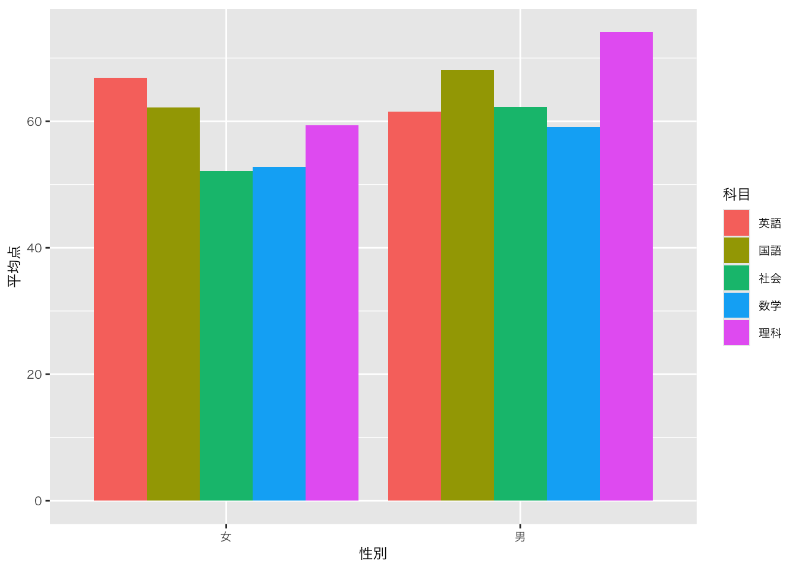
df_sample5科目_平均点 %>%
ggplot(aes(x = 性別, y = 平均点, fill = 科目)) +
geom_col(position = "dodge") # , stat = "identity"を削除
以下の二つのコードは同じです。教科書もそうですが、通常、簡易的な記述法であるgeom_colを使います
geom_bar(position = "dodge", stat = "identity")
geom_col(position = "dodge")
df_sample5科目_平均点 %>%
ggplot(aes(x = 性別, y = 平均点, fill = 科目)) +
geom_bar(position = "dodge")Error in `geom_bar()`:
! Problem while computing stat.
ℹ Error occurred in the 1st layer.
Caused by error in `setup_params()`:
! `stat_count()` must only have an x or y aesthetic.
上のコードは動かない。stat = “identity”を指定しないとエラーになる（空白だとcountしようとするが、countするデータがないため）
Ⅲ. データの整形
1. 基本的な流れ（再確認）：dplyrとggplot
flowchart TB
A([データの加工 <br> <strong>dplyr</strong> <br> 例 select filter]) --- B([データの可視化 <br> <strong>ggplot2</strong> <br> 例 geom_bar])
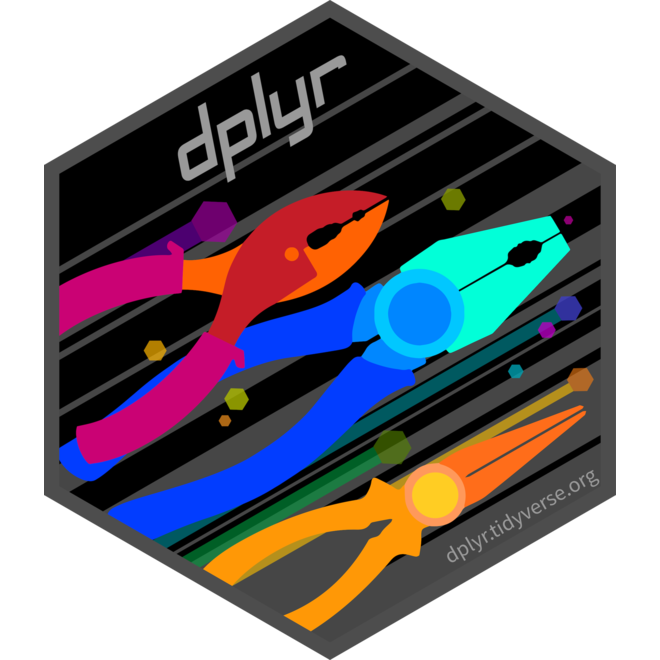 
2. データの加工
- たとえば、性別や科目をファクターにして、水準（並び順）を与える
- データの確認
df_sample5科目_平均点 %>% head()# A tibble: 6 × 4
年度 科目 性別 平均点
<dbl> <fct> <fct> <dbl>
1 2020 国語 女 48.4
2 2020 国語 男 42
3 2020 数学 女 52.8
4 2020 数学 男 47.2
5 2020 理科 女 59.4
6 2020 理科 男 56 view()関数をつかってデータを見ると（カラム名にカーソルを当てる）と、水準が見える
- ➡ 性別、科目名の並びが変わったことを確認
df_sample5科目_平均点 %>%
ggplot(aes(x = 性別, y = 平均点, fill = 科目)) +
geom_bar(position = "dodge", stat = "identity")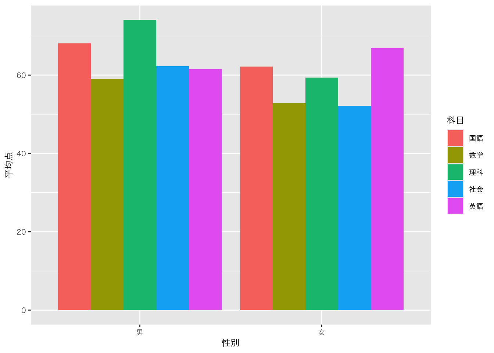
3. データの集計
- サンプルデータを使ってデータを加工してみよう
⑴ グループごとに集計してみよう
平均点を算出してみよう
df_sample5科目 %>%
group_by(年度, 科目, 性別) %>% # 分けたい変数（カラム名）を入れる
summarise( # データを要約する関数
平均点 = mean(成績) # 平均値を出す関数
) %>% head()# A tibble: 6 × 4
# Groups: 年度, 科目 [3]
年度 科目 性別 平均点
<dbl> <chr> <chr> <dbl>
1 2020 国語 女 48.4
2 2020 国語 男 42
3 2020 数学 女 52.8
4 2020 数学 男 47.2
5 2020 理科 女 59.4
6 2020 理科 男 56.0このデータフレーム（df_sample5科目）は科目と変数をfactor変換していないことに注意
head()の代わりにview()を使って確認してみましょう。ウェブサイトではview()を表示できないので、gt()を使っています
df_sample5科目 %>%
group_by(年度, 科目, 性別) %>% # 分けたい変数（カラム名）を入れる
summarise( # データを要約する関数
平均点 = mean(成績) # 平均値を出す関数
) %>% gt()| 性別 | 平均点 |
|---|---|
| 2020 - 国語 | |
| 女 | 48.35714 |
| 男 | 42.00000 |
| 2020 - 数学 | |
| 女 | 52.77500 |
| 男 | 47.18571 |
| 2020 - 理科 | |
| 女 | 59.38889 |
| 男 | 56.01667 |
| 2020 - 社会 | |
| 女 | 48.44000 |
| 男 | 38.26000 |
| 2020 - 英語 | |
| 女 | 66.92222 |
| 男 | 29.86667 |
| 2021 - 国語 | |
| 女 | 62.22500 |
| 男 | 61.57143 |
| 2021 - 数学 | |
| 女 | 32.53333 |
| 男 | 40.36667 |
| 2021 - 理科 | |
| 女 | 42.15556 |
| 男 | 74.13333 |
| 2021 - 社会 | |
| 女 | 47.85000 |
| 男 | 62.28889 |
| 2021 - 英語 | |
| 女 | 60.60000 |
| 男 | 31.60000 |
| 2022 - 国語 | |
| 女 | 55.19000 |
| 男 | 68.08000 |
| 2022 - 数学 | |
| 女 | 32.53750 |
| 男 | 59.10000 |
| 2022 - 理科 | |
| 女 | 45.71429 |
| 男 | 42.71250 |
| 2022 - 社会 | |
| 女 | 46.85556 |
| 男 | 35.61667 |
| 2022 - 英語 | |
| 女 | 47.07273 |
| 男 | 61.50000 |
| 2023 - 国語 | |
| 女 | 41.62500 |
| 男 | 57.70000 |
| 2023 - 数学 | |
| 女 | 46.25000 |
| 男 | 51.55714 |
| 2023 - 理科 | |
| 女 | 43.65455 |
| 男 | 56.27500 |
| 2023 - 社会 | |
| 女 | 52.11250 |
| 男 | 30.30000 |
| 2023 - 英語 | |
| 女 | 36.90000 |
| 男 | 53.17778 |
round()関数を使うと概数にできる
平均点 = round(mean(成績), digits = 1)df_sample5科目 %>%
group_by(年度, クラス, 性別) %>% # 分けたい変数（カラム名）を入れる
summarise( # データを要約する関数
人数 = n() # 個数（行数）をカウント
) %>% head()# A tibble: 6 × 4
# Groups: 年度, クラス [3]
年度 クラス 性別 人数
<dbl> <chr> <chr> <int>
1 2020 A 女 5
2 2020 A 男 10
3 2020 B 女 7
4 2020 B 男 8
5 2020 C 女 11
6 2020 C 男 4⑵ 既存のデータから新しい列を作ってみよう
- Cf. 既存のカラム名を列名に指定すると、上書きになります
比率を算出しよう
- summarise()関数を使って個数をカウント
- 「人数」というカラムができる
- mutate()関数を使って比率を算出（「比率」列を追加）
df_sample5科目 %>%
group_by(年度, クラス, 性別) %>% # 分けたい変数（カラム名）を入れる
summarise( # データを要約する関数
人数 = n() # 個数（行数）をカウント
) %>%
mutate(
freq = 人数/sum(人数), 比率 = round((freq*100), 1)
) %>% head()# A tibble: 6 × 6
# Groups: 年度, クラス [3]
年度 クラス 性別 人数 freq 比率
<dbl> <chr> <chr> <int> <dbl> <dbl>
1 2020 A 女 5 0.333 33.3
2 2020 A 男 10 0.667 66.7
3 2020 B 女 7 0.467 46.7
4 2020 B 男 8 0.533 53.3
5 2020 C 女 11 0.733 73.3
6 2020 C 男 4 0.267 26.7- データフレームに、freqと比率という新しい列が加わったことを確認する
df_sample5科目 %>%
group_by(年度, 性別) %>% # 分けたい変数（カラム名）を入れる
summarise( # データを要約する関数
人数 = n() # 個数（行数）をカウント
) %>%
mutate(
freq = 人数/sum(人数), 比率 = round((freq*100), 1)
) %>%
# 人数と比率を算出したので、ggplotに渡せる
ggplot(aes(x = 年度, y = 比率, group = 性別, colour = 性別)) +
geom_line()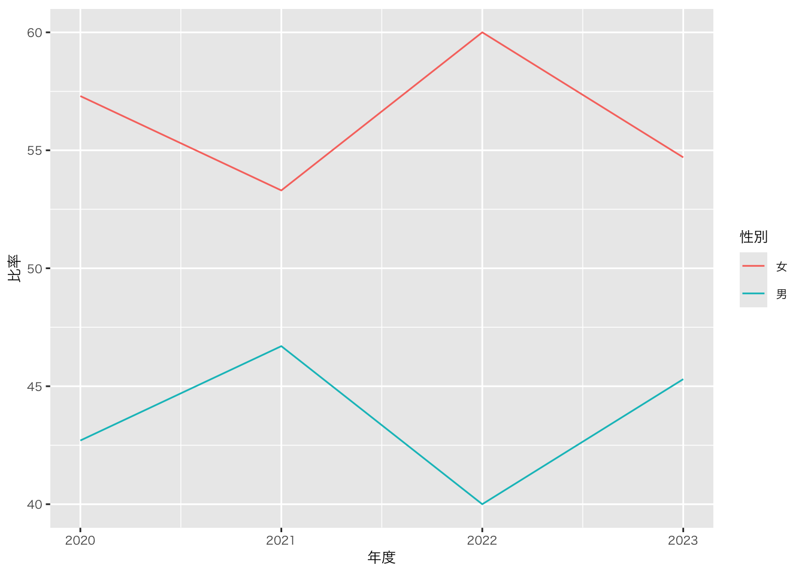
コンソールに以下のコードを入力してみよう。summarise関数でできることが右下ペインで説明されます。中央値、最大値、最小値、など算出できます
?summarise4. データの選択
⑴ フィルタリング
- フィルタリング
# A tibble: 6 × 7
年度 学期 クラス 科目 性別 生徒数 成績
<dbl> <dbl> <chr> <chr> <chr> <dbl> <dbl>
1 2021 1 A 国語 男 36 68.6
2 2023 1 A 国語 男 36 31.8
3 2020 2 A 国語 男 35 17.4
4 2023 2 A 国語 男 37 82.3
5 2020 3 A 国語 男 35 33.1
6 2022 3 A 国語 男 38 63 - フィルタリング（除外）
# A tibble: 6 × 7
年度 学期 クラス 科目 性別 生徒数 成績
<dbl> <dbl> <chr> <chr> <chr> <dbl> <dbl>
1 2020 1 A 国語 女 36 23.7
2 2021 1 A 国語 男 36 68.6
3 2023 1 A 国語 男 36 31.8
4 2020 2 A 国語 男 35 17.4
5 2021 2 A 国語 女 35 80.1
6 2023 2 A 国語 男 37 82.3⑵ 列の選択
df_sample5科目 %>% select(年度, 性別) %>% head()# A tibble: 6 × 2
年度 性別
<dbl> <chr>
1 2020 女
2 2021 男
3 2022 女
4 2023 男
5 2020 男
6 2021 女 df_sample5科目 %>% select(!年度) %>% head()# A tibble: 6 × 6
学期 クラス 科目 性別 生徒数 成績
<dbl> <chr> <chr> <chr> <dbl> <dbl>
1 1 A 国語 女 36 23.7
2 1 A 国語 男 36 68.6
3 1 A 国語 女 35 22.6
4 1 A 国語 男 36 31.8
5 2 A 国語 男 35 17.4
6 2 A 国語 女 35 80.1df_sample5科目 %>% select(3:5) %>% head() # 列の順序でも指定できる。「:」は範囲# A tibble: 6 × 3
クラス 科目 性別
<chr> <chr> <chr>
1 A 国語 女
2 A 国語 男
3 A 国語 女
4 A 国語 男
5 A 国語 男
6 A 国語 女 - 列を選択すると同時に、カラム名を変更
- select(変更後のカラム名 = 変更前のカラム名)
df_sample5科目 %>% select(年度, ジェンダー = 性別) %>% head() # 列を選択すると同時に、カラム名を変更（変更後 = 変更前）# A tibble: 6 × 2
年度 ジェンダー
<dbl> <chr>
1 2020 女
2 2021 男
3 2022 女
4 2023 男
5 2020 男
6 2021 女 ⑶ 行の選択
df_sample5科目 %>% slice(5:10)# A tibble: 6 × 7
年度 学期 クラス 科目 性別 生徒数 成績
<dbl> <dbl> <chr> <chr> <chr> <dbl> <dbl>
1 2020 2 A 国語 男 35 17.4
2 2021 2 A 国語 女 35 80.1
3 2022 2 A 国語 女 36 14.6
4 2023 2 A 国語 男 37 82.3
5 2020 3 A 国語 男 35 33.1
6 2021 3 A 国語 女 37 37.4- ランダムサンプリング
df_sample5科目 %>% slice_sample(n = 20) %>% head()# A tibble: 6 × 7
年度 学期 クラス 科目 性別 生徒数 成績
<dbl> <dbl> <chr> <chr> <chr> <dbl> <dbl>
1 2022 1 A 英語 女 36 61.3
2 2020 1 A 英語 女 37 96.2
3 2021 2 E 理科 男 36 80.7
4 2023 3 C 理科 女 35 49
5 2020 3 E 国語 女 35 90.9
6 2021 1 C 国語 男 37 36.4- ランダムサンプリング（データを固定）
# A tibble: 6 × 7
年度 学期 クラス 科目 性別 生徒数 成績
<dbl> <dbl> <chr> <chr> <chr> <dbl> <dbl>
1 2022 3 E 理科 男 36 63.5
2 2021 1 B 国語 男 35 99.3
3 2022 1 B 社会 男 36 80.1
4 2021 3 E 数学 男 35 0.4
5 2020 1 E 社会 男 35 34
6 2023 1 A 英語 男 38 12 set.seed()関数でデータを固定しないと、チャンクを実行するたびに、サンプリングをし直します（再現性がありません）
教科書はtidyなデータセットを多用していることもあり、dplyrの説明が手薄です。この授業も授業回数の関係でdplyrについて時間を割けません
R初学者のためのtidyverse100本ノックがわかりやすいと思います。この他、役立つサイト：前処理（データ加工）も参考になると思います
-
dplyrについては、ChatGPTの回答は精度が高いです。困ったら、ChatGPTに聞いてみましょう
- 「tidyverse」で、「mutate」を使って、「パイプを使って」など、操作方法を指定した方がいいでしょう。base Rで回答することもあるからです
以前配布した、チートシートも有益です
Ⅳ. 演習
- 自分のデータでRを動かし、図を作ってみよう
- いまのファイルに続けるのではなく、新たにquarto documentを作って、作業して下さい
1. 日本語の表示フォントの設定
以下のコードはMacで動くように設定されています。以下のセットアップチャンク内の設定フォント「HiraginoSans-W3」を「Meiryo」に置き換えて下さい。動かなかったら（日本語が□で表示される）教えてください
# ggplotのデフォルト設定の調整
# フォントファミリとサイズ
ggplot2::theme_set(
ggplot2::theme_get() +
ggplot2::theme(text = ggplot2::element_text(family = "HiraginoSans-W3", size = 9))
)
# text/labelのフォントファミリとサイズ
ggplot2::update_geom_defaults(
"text",
list(family = "HiraginoSans-W3", size = 3)
)
ggplot2::update_geom_defaults(
"label",
list(family = "HiraginoSans-W3", size = 3)
)2. サンプル（最終成果物として提出して欲しいレポートのかたち）
Ⅴ. 宿題
1. 授業の感想
- 回答先：Google Forms
- 締め切り：2024年7月5日（金）23時59分まで
2. 演習
- できる範囲でいいので、自分のデータで図（最低一つ）を作って下さい
- 回答先：Google Forms
- 締め切り：2024年7月10日（水）10時30分まで
- 形式: R Studioで出力されたhtmlファイル